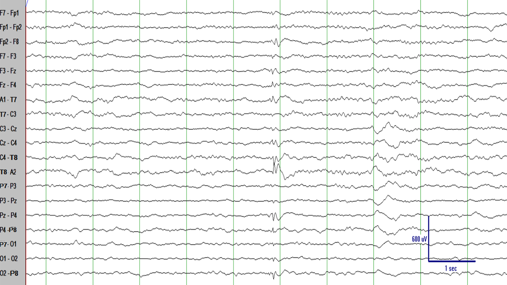

¡Felicidades! Tras haber estudiado los temas anteriores, ya no eres un principiante. Tienes el conocimiento suficiente para entender un aspecto crucial de leer EEG: localización. El primer paso es entender lo que estamos viendo en el EEG.
Montajes
Para entender localización, primero necesitas un buen entendimiento de los montajes en el EEG.
Aquí tienes un segmento de EEG. Veamos lo que estamos viendo.
El EEG mide voltaje. En particular, el EEG mide la diferencia de voltaje entre dos electrodos.
Los montajes bipolares (como este montaje bipolar anterior-posterior) comparan un electrodo con el siguiente en la cadena. Por ejemplo, Fp1 se compara con F7 para medir el voltaje Fp1-F7; F7 se compara con T7 para calcular el voltaje F7-T7, y así sucesivamente.
Esto significa que el canal Fp1-F7 es simplemente la diferencia de voltaje Fp1 menos F7; el canal F7-T7 es simplemente la diferencia de voltaje F7 menos T7 y así sucesivamente.
Haciendo un inciso, en un montaje bipolar anterior-posterior, cada electrodo se compara con el electrodo de detrás (excepto, O1, Pz, y O2, que son electrodos de final de cadena y no tienen ningún electrodo tras ellos). Por lo tanto, este montaje se llama...
...montaje en doble banana. Sí, los epileptólogos tienen mucha imaginación (bueno, ... raramente, para ser justos).
Volviendo a lo que estamos leyendo cuando leemos EEG, tomemos el ejemplo de la deflección en el rectángulo rojo. Es una deflección en Fp1-F7 y esto significa que, en este momento, Fp1 tiene un voltaje más negativo que F7.
Si asumimos que la diferencia de voltaje entre Fp1 y F7 es -70 microvoltios (Fp1 es 70 microvoltios más negativo que F7 en ese momento), entonces la deflección de la línea de base es 70 microvoltios de altura y la deflección es hacia arriba (porque la diferencia es negativa).
¡Espera!...¿Por qué las diferencias negativas van hacia arriba? Es simplemente porque las primeras compañías que fabricaban máquinas electrofisiológicas decidieron que las diferencias negativas se representarían como deflecciones hacia arriba (y diferencias positivas como deflecciones hacia abajo). No hay una razón particular para esto y no es particularmente intuitivo, pero es demasiado tarde para cambiarlo (y, también, hacerlo de la manera opuesta sería igual de arbitrario de lo que es ahora). Los primeros fabricantes de máquinas electrofisiológicas decidieron arbitrariamente esta convención.
Esta deflección en el rectángulo rojo va hacia abajo, lo que significa que en el momento capturado en el rectángulo rojo, P7 es menos negativo (o más positivo) que O1. O O1 es más negativo que P7 (si eso es más intuitivo). Recuerda que el voltaje es siempre una diferencia entre puntos, no un valor absoluto en ningún punto.
Si asumimos que la diferencia de voltaje entre P7 y O1 es +80 microvoltios (P7 es 80 microvoltios más positivo que O1 en ese momento), entonces la deflección comparado con la base es de 80 microvoltios de altura y la deflección va hacia abajo.
Los montajes bipolares no tienen que ser en una dirección anterior-posterior. Por ejemplo, los montajes transversos comparan un electrodo con el electrodo inmediatamente lateral.
En este montaje bipolar transverso, los electrodos se comparan con los electrodos a su derecha (excepto por los electrodos que están en el extremo derecho, que son los electrodos de final de cadena y no tienen ningún electrodo a su derecha). Por ejemplo, F7 se compara con Fp1, Fp1 se compara con Fp2 y así sucesivamente.
Los montajes diferentes se complementan unos a otros porque los electrodos que son final de cadena en un montaje bipolar típicamente no son final de cadena en un montaje bipolar distinto. Por ejemplo, los montajes bipolares transversos son particularmente útiles para buscar reversión de fase en electrodos que son final de cadena en un montaje bipolar anterior-posterior. Los montajes bipolares transversos son típicamente usados durante el sueño porque muestran bien la simetría de las ondas del vertex, los husos del sueño, y otros elementos del sueño.
En este montaje bipolar anterior-posterior hay un complejo punta-onda que parece bifrontal, pero de amplitud más alta en la región frontal derecha que en la región frontal izquierda.
La misma descarga vista en un montaje bipolar tranverso muestra que la reversión de fase ocurre en Fp2.
Otro montaje bipolar es el montaje circunferencial, en el que los electrodos se comparan con el siguiente electrodo formando un círculo. El montaje circunferencial bipolar, como otros montajes bipolares, permite una perspectiva diferente comparando electrodos.
Las comparaciones de Fp1 con F7, F7 con T7, etc. forman un círculo.
Montaje circunferencial como se muestra en la figura anterior.
¿Y qué es esa cosa referencial? Un montaje referencial se basa en la idea de usar algún electrodo (o grupo de electrodos) que es (o son) "eléctricamente inactivo(s)": no debe haber deflecciones mayores en el (los) electrodo(s) referenciales. Una referencia comunmente usada es Cz porque está en la línea media lejos de los músculos de la cabeza y donde las descargas epileptiformes o las crisis epilépticas son relativamente raras.
En un montaje referencial, todos los electrodos se comparan con el (los) electrodo(s) de referencia, que, en este caso, es Cz.
Ejemplo de montaje con referencia en Cz, en el que todos los electrodos se comparan con Cz. Es importante entender que, si hay descargas epileptiformes o convulsiones en el área cerca de Cz, entonces Cz no sería una buena referencia en ese caso. La referencia debe ser un electrodo (o grupo de electrodos) que no es particularmente activo. La mejor referencia varía de paciente a paciente e, incluso en el mismo paciente de una situación a otra.
¿De dónde viene la electricidad?
Hemos visto más arriba que el EEG simplemente mide una diferencia de voltaje. Pero, ¿de dónde viene esta electricidad?
Imaginemos una neurona cortical que recibe varias terminaciones nerviosas de otras neuronas hacia sus dendritas y soma.
Cuando las neuronas presinápticas liberan sus neurotransmisores en las sinapses, estas se unen a los receptores postsinápticos. Esto causa la apertura de los canales iónicos, lo que permite que los iones positivos (típicamente sodio) entren en la neurona: esto es un potencial excitatorio postsináptico.
El flujo de iones positivos (típicamente sodio) en la neurona deja el espacio extracelular alrededor del soma y las dendritas relativamente negativos. De hecho, durante los potenciales excitatorios postsinápticos, el espacio extracelular alrededor del soma y las dendritas es relativamente negativo, no sólo con respecto al interior de la neurona, pero también con respecto al espacio extracelular alrededor del axón.
Una neurona puede ser conceptualizada (en una forma muy simplista) como una estructura vertical perpendicular a la superficie del cerebro. Cuando hay un potencial postsináptico excitatorio en el soma y las dendritas, la neurona puede ser vista como un dipolo eléctrico muy pequeño con un polo negativo cercano a la superficie del cerebro y un polo positivo cercano a la profundidad del cerebro.
Cuando estos dipolos eléctricos se suman (varios miles de neuronas en la misma área del cerebro tienen un potencial postsináptico excitatorio al mismo tiempo)...
...son equivalentes a un dipolo eléctrico grande que puede causar cambios eléctricos macroscópicos en la superficie del cerebro (diminutos, pero detectables: del orden de varios microvoltios).
Si asumes que el cerebro es una esfera perfecta y todas las neuronas en la corteza cerebral solamente se orientan perpendicularmente a la superficie del cerebro, entonces si encuentras una deflección negativa en el cuero cabelludo, puedes asumir que el generador de esa negatividad en la superficie es un dipolo como el mostrado en la figura.
Hay un gradiente en el campo eléctrico con menos y menos negatividad en el cuero cabelludo cuanto más te alejes del dipolo. Por lo tanto, el dipolo eléctrico que genera la deflección negativa se localiza justo debajo del punto de máxima negatividad en el cuero cabelludo. !Maravilloso! Esto es tan intuitivo: la máxima negatividad en el EEG en la superficie del cuero cabelludo significa que el generador de esa negatividad está justo debajo de la máxima negatividad.
Localización
Ahora ya sabemos lo que vemos en el EEG: diferencias de voltaje entre electrodos en el cuero cabelludo, cómo lo medimos: usando distintos montajes en el EEG, y lo que significa: un dipolo eléctrico que, en muchos casos, es perpendicular a la superficie del cuero cabelludo y (aproximadamente) localizado bajo el punto de máxima negatividad. Sabiendo todo eso podemos entender cómo localizar defleciones en el EEG.
Si miras al canal P4-O2, hay una punta hacia arriba. Como ya sabes, esto significa que la diferencia del voltaje P4 menos O2 es negativa (las defleciones negativas van hacia arriba). Esto significa que, en el momento de la punta, P4 tiene un voltaje más negativo que O2. Si miras al canal C4-P4, hay una punta hacia abajo. Esto significa que la diferencia C4 menos P4 es positiva (o dicho de otra manera, que C4 es más positivo que P4 o, de forma equivalente, que P4 es más negativo que C4).
Basándonos en esa información, puedes pensar que la punta es un campo eléctrico que, en la dirección anterior-posterior, tiene máxima negatividad en P4 y que la negatividad se hace progresivamente menos pronunciada hacia C4 y hacia O2.
Si miras al canal P8-O2, hay una punta hacia arriba. Como ya sabes, esto significa que la diferencia de voltaje P8 menos O2 es negativa (las defleciones negativas van hacia arriba). Esto significa que, en el momento de la punta, P8 tiene un voltaje más negativo que O2. Si miras al canal T8-P8, hay una punta hacia abajo. Esto significa que la diferencia T8 menos P8 es positiva (o dicho de otra manera, que T8 es más positivo que P8 o, de forma equivalente, que P8 es más negativo que T8). Siguiendo la misma lógica, T8 es más negativa que F8. En un montaje bipolar, el punto donde las puntas se señalan la una a la otra se llama "reversión de fase" y es el punto de máxima negatividad (T8 es la reversión de fase en la cadena F8-T8-P8).
Esta información adicional nos permite localizar mejor. Hay un campo eléctrico que, en la dirección anterior-posterior, tiene una negatividad máxima en P4 y P8 y esa negatividad se hace progresivamente menos pronunciada hacia C4 y también hacia O2 y también hacia F8 y O2. Algo como en el campo eléctrico en la figura de arriba.

Una vez que has localizado la punta en la dirección anterior-posterior con el montaje anterior-posterior, puedes querer localizar en la dirección transversa con el montaje bipolar transverso. Este es el mismo segmento en un montaje bipolar transverso. Si miras al canal P4-P8, hay una punta hacia arriba. Esto significa que la diferencia de voltaje P4 menos P8 es negativa (las defleciones negativas van hacia arriba). Esto significa que, en el momento de la punta, P4 tiene un voltaje más negativo que P8. Si miras al canal Pz-P4, hay una punta hacia abajo. Esto significa que la diferencia Pz menos P4 es positiva (o, dicho de otra manera, que Pz es más positivo que P4 o, de forma equivalente, que P4 es más negativo que Pz).
Esta información adicional nos permite mejor en la dirección transversal. Hay un campo eléctrico que, en la dirección transversa, tiene máxima negatividad en P4 y esa negatividad se hace progresivamente menos pronunciada hacia Pz y hacia P8.
Si miras al canal T8-A2, hay una punta hacia arriba. Como ya sabes, esto significa que la diferencia de voltaje T8 menos A2 es negativa (las defleciones negativas van hacia arriba). Esto significa que, en el momento de la punta, T8 tiene un voltaje más negativo que A2. Si miras al canal C4-T8, hya una punta hacia abajo. Esto significa que la diferencia C4 menos T8 es positiva (o, dicho de otra manera, que C4 es más positivo que T8 o, de forma equivalente, que T8 es más negativo que C4).
Esta información adicional nos permite localizar mejor en la dirección transversa. Hay un campo eléctrico que, en la dirección transversa, tiene máxima negatividad en P4 y T8 y esa negatividad se hace progresivamente menos pronunciada hacia Pz y hacia P8 y también hacia C4 y hacia A2. Algo como en la figura de arriba.
En un montaje referencial (como el montaje referencial con una referencia a Cz de arriba), el punto de máxima negatividad en el EEG del cuero cabelludo se marca por las defleciones con la mayor amplitud (voltaje) en el EEG. Puedes ver que el punto de máximo voltaje durante la punta está en T8, P8, y (en menor grado), P4. Esto es consistente con el campo eléctrico esquemático que habiamos estimado en la figura.
Si asumes cerebros perfectamente esféricos con todas las neuronas perpendiculares a la superficie cerebral puedes concluir que el generador de esa punta es un dipolo localizado en algún lugar entre T8, P8, y P4.
¿Y las crisis epilépticas? Deberías localizar las crisis epilépticas aproximadamente de la misma manera. Mira las defleciones y estima dónde está la máxima negatividad en el EEG en el cuero cabelludo. Las crisis epilépticas son una sucesión de defleciones que evolucionan en el tiempo, así que la localización varía en el tiempo. La localización de mayor interés en la mayoría de las crisis epilépticas es la localización del origen de las crisis epilépticas.
Siguiendo las defleciones en la crisis epiléptica puedes pensar en un dipolo negativo con máxima negatividad en F7/T7 que luego se extiende para afectar F3 e, incluso, Fz. En esta crisis epiléptica la máxima negatividad siempre está en la región F7/T7 pero en otras crisis epilépticas la región de máxima negatividad puede migrar en el tiempo.
La crisis epiléptica aparecería como se representa en la figura con máxima negatividad en algún punto entre F7, T7, y F3 con algo de evolución y migración durante la crisis epiléptica.
Asumiendo un cerebro perfectamente esférico, el dipolo aparecería como en la figura de arriba con algo de evolución y migración durante la crisis epiléptica.
¿Y las crisis epilépticas generalizadas?
Las crisis epilépticas generalizadas tienen un voltaje negativo de aproximadamente la misma magnitud en todo el cuero cabelludo porque estas crisis epilépticas se generan en los circuitos córtico-tálamo-corticales. Por lo tanto, típicamente aparecen similares en todos los canales del EEG (típicamente más prominentes en las regiones frontales).
Asumiendo un cerebro perfectamente esférico, los dipolos aparecerían como en la figura de arriba.
RESUMEN
En este momento ya eres capaz de localizar puntas, crisis epilépticas y otras defleciones en el EEG.
Cierto. Esto es sólo una localización aproximada basada en el EEG del cuero cabelludo. En realidad, la localización es mucho más complicada (los cerebros no son perfectamente esféricos, las neuronas no son siempre perpendiculares a la superficie del cuero cabelludo) y requiere localización del origen (source localization).
De todas formas, esta localización aproximada te será extremadamente útil en la mayoría de ocasiones y te hará entender mejor lo que estás viendo en el EEG.
Una nota final: la localización puede parecer que lleva mucho tiempo. La realidad es que es complicada sólo al principio, pero se hace de forma natural y muy rápida cuanto más practiques. ¡Sigue aprendiendo y localizando!